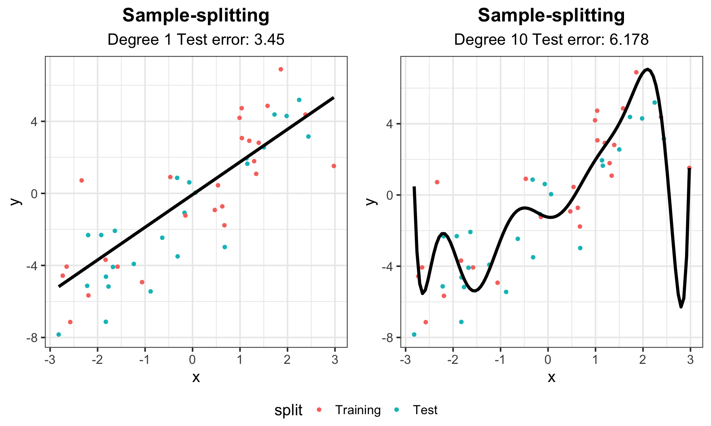

library(ggpubr)
# generate data
set.seed(302)
n <- 30
x <- sort(runif(n, -3, 3))
y <- 2*x + 2*rnorm(n)
x_test <- sort(runif(n, -3, 3))
y_test <- 2*x_test + 2*rnorm(n)
df_train <- data.frame("x" = x, "y" = y)
df_test <- data.frame("x" = x_test, "y" = y_test)
# store a theme
my_theme <- theme_bw(base_size = 16) +
theme(plot.title = element_text(hjust = 0.5, face = "bold"),
plot.subtitle = element_text(hjust = 0.5))
# generate plots
g_train <- ggplot(df_train, aes(x = x, y = y)) + geom_point() +
xlim(-3, 3) + ylim(min(y, y_test), max(y, y_test)) +
labs(title = "Training Data") + my_theme
g_test <- ggplot(df_test, aes(x = x, y = y)) + geom_point() +
xlim(-3, 3) + ylim(min(y, y_test), max(y, y_test)) +
labs(title = "Test Data") + my_theme
ggarrange(g_train, g_test) # from ggpubr, to put side-by-sideMATH167R: Prediction
Peter Gao
Overview of today
- Training and Testing
- Cross-validation
- Statistical Prediction Algorithms
Goal: Learn the concepts, terminology, and techniques in statistical prediction.
Acknowledgement
This lecture draws from Ryan Tibshirani’s Statistical Prediction lecture for Statistical Computing at Carnegie Mellon University.
Training and Testing
Recall: Regression
Assume we have some data:
- \(X_1,\ldots, X_p\): \(p\) independent variables/explanatory variables/covariates/predictors
- \(Y\): the dependent variables/response/outcome.
We want to know the relationship between our covariates and our response, we can do this with a method called regression. Regression provides us with a statistical method to conduct inference and prediction.
What is the difference between inference and prediction?
Recall: Regression
- inference: assess the relationship between our variables, our statistical model as a whole, predictor importance
- What is the relationship between sleep and GPA?
- Is parents’ education or parents’ income more important for explaining income?
- prediction: predict new/future outcomes from new/future covariates
- Can we predict test scores based on hours spent studying?
Linear Regression
Given our response \(Y\) and our predictors \(X_1, \ldots, X_p\), a linear regression model takes the form:
\[ \begin{align} Y &= \beta_0 + \beta_1 X_1 + \cdots + \beta_p X_p + \epsilon,\\ \epsilon &\sim N(0,\sigma^2) \end{align} \]
Previously, we focused on using this model for inference (e.g. \(H_0: \beta_1 = 0\)). Today, we are shifting our focus to prediction.
Statistical Prediction
Often, we use a linear model even when we know that the assumptions for inference are broken: for example, when errors are not normally distributed.
Though the model may be wrong, it may still be useful for learning about the relationship between response and covariates.
In addition, we can use a working model for prediction.
Training and testing data
When training predictive algorithms, it is common to split your data into two categories:
Training data: data used to train/fit our model
Test data: data used to evaluate/test the performance of our model
Suppose we have training data \(X_{i1}, \ \ldots,\ X_{ip}, Y_i, \ i = 1,\ldots,n\) which we use to estimate regression coefficents \(\hat\beta_0, \ \hat\beta_1, \ldots \hat\beta_p\) (Recall: we use \(\hat{}\) “hats” to indicate estimates).
Making predictions
Now suppose we are given new testing data \(X^*_1,\ \ldots, X^*_{p}\) and asked to predict the associated \(Y^∗\). Using our estimated linear model, the prediction is: \[\widehat{Y}^* = \hat\beta_0 + \hat{\beta}_1 X^*_1 + \cdots + \hat{\beta}_p X^*_p\]
Given our prediction
\[\hat{Y} = \hat\beta_0 + \hat{\beta}_1 X^*_1 + \cdots + \hat{\beta}_p X^*_p\] We define the mean squared error, or mean squared prediction error, as
\[\mathbb{E}[(Y^* -\hat{Y}^*)^2].\]
In other words, the test error is defined as the expected squared difference between a new prediction and the truth, where the expectation is taken over the population distribution of test data.
Test error
Mean squared prediction error: \(\mathbb{E}[(Y^* -\hat{Y}^*)^2],\) the expected squared difference between a new prediction and the truth.
The MSPE quantifies the predictive power of our model, but we do not actually have access to the full poulation distribution.
As such, we must estimate the MSPE using our data in order to use it to assess our model.
In particular, we could use the MSPE for:
- predictive assessment: understanding the magnitude of errors we should expect when making future predictions
- model/method selection: choosing among multiple candidate models.
Training Error
A natural estimator for the test error might be the observed average training error:
\[\dfrac{1}{n}\sum_{i=1}^n (Y_i - \hat{Y}_i)^2.\]
Can you think of a problem with this approach?
In general, this will be too optimistic. Why? We obtained parameter estimates \(\widehat{\beta}_0,\ \ldots,\ \widehat{\beta}_p\) based on our training data.
Training Error
More specifically (with a linear regression model), we chose parameters to minimize the squared errors (hence, least squares).
We cannot expect this error rate to generalize to test data.
Critically, the more complex our model, the more optimistic our training data will be as an estimate for our test data
Example: Training Error vs Test Error
Example: Training Error vs Test Error
Example: Training Error vs Test Error
# Fit linear model and calculate training error
lm_fit <- lm(y ~ x, data = df_train)
yhat_train <- predict(lm_fit)
# (y_i - yhat_i)^2
train_err <- mean((df_train$y - yhat_train)^2)
# Calculate testing error
yhat_test <- predict(lm_fit, data.frame(x = df_test$x))
test_err <- mean((df_test$y - yhat_test)^2)
# Add linear model and error text to plot
g_train2 <- g_train +
labs(subtitle = paste("Training error:", round(train_err, 3))) +
geom_line(aes(y = fitted(lm_fit)), col = "red", lwd = 1.5)
g_test2 <- g_test +
labs(subtitle = paste("Test error:", round(test_err, 3))) +
geom_line(aes(y = fitted(lm_fit), x = df_train$x), col = "red", lwd = 1.5)
ggarrange(g_train2, g_test2)Example: Training Error vs Test Error for linear model
Example: Degree 5 polynomial
# Fit 5 degree polynomial and calculate training error
lm_fit_5 <- lm(y ~ poly(x, 5), data = df_train)
yhat_train_5 <- predict(lm_fit_5)
train_err_5 <- mean((df_train$y - yhat_train_5)^2)
# Calculate testing error
yhat_test_5 <- predict(lm_fit_5, data.frame(x = df_test$x))
test_err_5 <- mean((df_test$y - yhat_test_5)^2)
# Create smooth line for plotting
x_fit <- data.frame(x = seq(-3, 3, length = 100))
line_fit <- data.frame(x = x_fit, y = predict(lm_fit_5, newdata = x_fit))
# Add linear model and error text to plot
g_train3 <- g_train +
labs(subtitle = paste("Training error:", round(train_err_5, 3))) +
geom_line(data = line_fit, aes(y = y, x = x), col = "red", lwd = 1.5)
g_test3 <- g_test +
labs(subtitle = paste("Test error:", round(test_err_5, 3))) +
geom_line(data = line_fit, aes(y = y, x = x), col = "red", lwd = 1.5)
ggarrange(g_train3, g_test3)Example: Degree 5 polynomial
Example: Degree 10 polynomial
# Fit 10 degree polynomial and calculate training error
lm_fit_10 <- lm(y ~ poly(x, 10), data = df_train)
yhat_train_10 <- predict(lm_fit_10)
train_err_10 <- mean((df_train$y - yhat_train_10)^2)
# Calculate testing error
yhat_test_10 <- predict(lm_fit_10, data.frame(x = df_test$x))
test_err_10 <- mean((df_test$y - yhat_test_10)^2)
# Create smooth line for plotting
x_fit <- data.frame(x = seq(-3, 3, length = 100))
line_fit <- data.frame(x = x_fit, y = predict(lm_fit_10, newdata = x_fit))
# Add linear model and error text to plot
g_train4 <- g_train +
labs(subtitle = paste("Training error:", round(train_err_10, 3))) +
geom_line(data = line_fit, aes(y = y, x = x), col = "red", lwd = 1.5)
g_test4 <- g_test +
labs(subtitle = paste("Test error:", round(test_err_10, 3))) +
geom_line(data = line_fit, aes(y = y, x = x), col = "red", lwd = 1.5)
ggarrange(g_train4, g_test4)Example: Degree 10 polynomial
Example: Degree 15 polynomial
# Fit 15 degree polynomial and calculate training error
lm_fit_15 <- lm(y ~ poly(x, 15), data = df_train)
yhat_train_15 <- predict(lm_fit_15)
train_err_15 <- mean((df_train$y - yhat_train_15)^2)
# Calculate testing error
yhat_test_15 <- predict(lm_fit_15, data.frame(x = df_test$x))
test_err_15 <- mean((df_test$y - yhat_test_15)^2)
# Create smooth line for plotting
x_fit <- data.frame(x = seq(-3, 3, length = 100))
line_fit <- data.frame(x = x_fit, y = predict(lm_fit_15, newdata = x_fit))
# Add linear model and error text to plot
g_train5 <- g_train +
labs(subtitle = paste("Training error:", round(train_err_15, 3))) +
geom_line(data = line_fit, aes(y = y, x = x), col = "red", lwd = 1.5)
g_test5 <- g_test +
labs(subtitle = paste("Test error:", round(test_err_15, 3))) +
geom_line(data = line_fit, aes(y = y, x = x), col = "red", lwd = 1.5)
ggarrange(g_train5, g_test5)Example: Degree 15 polynomial
Bias-Variance Tradeoff
The formula for test error can be decomposed as a function of the bias and variance of our estimates.
Bias: the expected difference between our estimate and the truth
Variance: the variability of our estimate of the truth
Bias-Variance Tradeoff
For example, suppose \(Y^*=\mu+\epsilon\) where \(\epsilon\) is mean zero random error with variance \(\sigma^2\):
\[\begin{align}\mathbb{E}[(Y^* -\hat{Y}^*)^2]&=\mathbb{E}(Y^{*2})-2\mathbb{E}(Y^*\hat{Y}^*)+\mathbb{E}(\hat{Y}^{*2})\\ &=\mu^2+\sigma^2-2\mu\mathbb{E}(\hat{Y}^*)+\mathrm{Var}(\hat{Y}^{*})+\mathbb{E}(\hat{Y}^{*2})\\ &=(\mu -\mathbb{E}(\hat{Y}^*))^2+\sigma^2+\mathrm{Var}(\hat{Y}^{*}) \end{align}\]
Bias-Variance Tradeoff

Image Credit: An Introduction to Statistical Learning by Gareth James, Daniela Witten, Trevor Hastie, Robert Tibshirani
Bias-Variance Tradeoff
Bias: underfitting, error from missing relevant relationships
Variance: overfitting, error from high sensitivity

Bias-Variance Tradeoff

Bias-Variance Tradeoff
It is easy to fit a model with extremely low variance and extremely high bias, or extremely low bias and extremely high variance, but these models will not have a good test error. Ideally, we would like an estimate that has both low bias and low variance, but this is not always possible!
As a general rule of thumb, as we increase the complexity of our model, the bias will decrease but the variance will increase. You can think of our bias decreasing because we are training our model to be more specific to our training data. You can think of the variance increasing because our model will be overfit, and will vary substantially with new training data.
Cross-validation
Sample-splitting
Where do we get our “training data” and our “test data” in practice? We can’t just simulate more data for our test data in the real world. In practice, we use a technique called sample-splitting:
- Split the data set into two (or more…) parts
- First part of data: train the model/method
- Second part of data: make predictions
- Evaluate observed test error
Sample-splitting
library(forcats)
# Generate data
set.seed(302)
n <- 50
x <- sort(runif(n, -3, 3))
y <- 2*x + 2*rnorm(n)
# Randomly split data into two parts
inds <- sample(rep(1:2, length = n))
split <- as.factor(inds) %>%
fct_recode(Training = "1", Test = "2")
data <- data.frame("x" = x, "y" = y, "split" = split)
g_split <- ggplot(data, aes(x = x, y = y, color = split)) + geom_point() +
labs(title = "Sample-splitting") + my_theme
g_splitSample-splitting
Sample-splitting
# Train on the training split
data_train <- data %>% filter(split == "Training")
lm_1 <- lm(y ~ x, data = data_train)
lm_10 <- lm(y ~ poly(x, 10), data = data_train)
# Predict on the second half
data_test <- data |> dplyr::filter(split == "Test")
pred_1 <- predict(lm_1, data.frame(x = data_test$x))
pred_10 <- predict(lm_10, data.frame(x = data_test$x))
# Calculate test error
test_err_1 <- mean((data_test$y - pred_1)^2)
test_err_10 <- mean((data_test$y - pred_10)^2)Sample-splitting
# Create smooth lines for plotting
x_fit <- data.frame(x = seq(min(data$x), max(data$x), length = 100))
line_fit_1 <- data.frame(x = x_fit, y = predict(lm_1, newdata = x_fit))
line_fit_10 <- data.frame(x = x_fit, y = predict(lm_10, newdata = x_fit))
# Add linear model and error text to plot
g_split1 <- g_split +
labs(subtitle = paste("Degree 1 Test error:", round(test_err_1, 3))) +
geom_line(data = line_fit_1, aes(y = y, x = x), col = "black", lwd = 1.5)
g_split10 <- g_split +
labs(subtitle = paste("Degree 10 Test error:", round(test_err_10, 3))) +
geom_line(data = line_fit_10, aes(y = y, x = x), col = "black", lwd = 1.5)
ggarrange(g_split1, g_split10, common.legend = TRUE, legend = "bottom")Sample-splitting
Sample-splitting
Sample-splitting gives us a powerful tool to evaluate the performance of estimator on data that was not used to train it. Of course, this comes at the cost of sacrificing some of our data that could be used in order to train a model with as much information as possible, but this is a sacrifice we must make in practice if we want to appropriately evaluate the predictive performance of our models/methods!
However, we can do better than just splitting our data in half.
k-fold Cross-validation
In general, the process of \(k\)-fold cross-validation is as follows:
- Split data into \(k\) parts (folds)
- Use all but 1 fold as your training data and fit the model
- Use the remaining fold for your test data and make predictions
- Switch which fold is your test data and repeat steps 2 and 3 until all folds have been test data (k times)
- Compute squared error
Commonly, we use \(k=5\) and \(k=10\).
k-fold Cross-validation
k-fold Cross-validation
For each split, we calculate the out-of-sample mean squared prediction error. For example, for the first split, we calculate
\[MSE_1 = \dfrac{1}{m}\sum_{j = 1}^{m} (Y_{j,test} - \hat{Y}_{j,test})^2,\] where \(m\) is the number of observations in the test set.
Then we calculate the cross-validation estimate of our test error
\[CV_{(k)} = \dfrac{1}{k}\sum_{i=1}^{k}MSE_i.\]
In words, our cross-validation estimate of the test error is the average of the mean squared errors across the splits!
Leave-One-Out Cross-Validation
Leave-one-out cross-validation (LOOCV) is a special instance of \(k\)-fold cross-validation where \(k\) is equal to the sample size \(n\). This means you fit \(n\) different models using \(n-1\) data points for your training data, and then test on the remaining individual data point.
Bias-variance Tradeoff
LOOCV strengths in that it uses as much data as possible to train the model while still having out-of-sample test data. Thus, it will provide approximately unbiased estimates of the test error, and is the best choice for minimizing bias.
However, LOOCV has one major drawback: variance. Because it fits \(n\) models, each of which is trained on almost identical training data, the outputs of the models are highly correlated. All other things being equal, the mean of correlated observations has a higher variance than the mean of uncorrelated observations. Thus, LOOCV has higher variance than \(k\)-fold CV with \(k<n\).
As a rule of thumb, stick to \(k=5\) and \(k=10\). These values tend to result in an ideal balance in terms of the bias-variance tradeoff.
What to do after cross-validation?
We use cross-validation as a method to evaluate our model, not to build our model! Thus, once we have used \(k\)-fold cross-validation to come up with a reasonable estimate of our out-of-sample test-error (and perhaps to choose among several models based on this test error), we use the full data to train our final predictive model.
Thus, using cross-validation, we are able to build a model based on our full data, and still evaluate the performance of our model on out-of-sample data!
k-fold Cross-validation Example
set.seed(302)
# Split data in 5 parts, randomly
k <- 5
inds <- sample(rep(1:k, length = n))
# Use data from before
data <- data.frame("x" = x, "y" = y, "split" = inds)
# Empty matrix to store predictions, 2 columns for 2 models
pred_mat <- matrix(NA, n, 2)
for (i in 1:k) {
data_train <- data |> dplyr::filter(split != i)
data_test <- data |> dplyr::filter(split == i)
# Train our models
lm_1_cv <- lm(y ~ x, data = data_train)
lm_10_cv <- lm(y ~ poly(x, 10), data = data_train)
# Record predictions
pred_mat[inds == i, 1] <- predict(lm_1_cv, data.frame(x = data_test$x))
pred_mat[inds == i, 2] <- predict(lm_10_cv, data.frame(x = data_test$x))
}
# Compute average MSE to get CV error
cv_err <- colMeans((pred_mat - data$y)^2)k-fold Cross-validation Example
# Create predictive model
lm_1 <- lm(y ~ x, data = data)
lm_10 <- lm(y ~ poly(x, 10), data = data)
# Create smooth lines for plotting
x_fit <- data.frame(x = seq(min(data$x), max(data$x), length = 100))
line_fit_1 <- data.frame(x = x_fit, y = predict(lm_1, newdata = x_fit))
line_fit_10 <- data.frame(x = x_fit, y = predict(lm_10, newdata = x_fit))
# Recode split for legend
data <- data %>%
mutate(Fold = fct_recode(as.factor(split), "Fold 1" = "1", "Fold 2" = "2",
"Fold 3" = "3", "Fold 4" = "4", "Fold 5" = "5"))
g_cv <- ggplot(data, aes(x = x, y = y, color = Fold)) + geom_point() +
labs(title = "Cross-validation") + my_theme
g_cv1 <- g_cv +
labs(subtitle = paste("Degree 1 CV error:", round(cv_err[1], 3))) +
geom_line(data = line_fit_1, aes(y = y, x = x), col = "black", lwd = 1.5)
g_cv10 <- g_cv +
labs(subtitle = paste("Degree 10 CV error:", round(cv_err[2], 3))) +
geom_line(data = line_fit_10, aes(y = y, x = x), col = "black", lwd = 1.5)
ggarrange(g_cv1, g_cv10, common.legend = TRUE, legend = "bottom")k-fold Cross-validation Example
Statistical Prediction Algorithms
We’ve talked about how regression can be used for both statistical inference and prediction. We are now going to shift to talk about algorithms designed specifically for statistical prediction.
We will discuss only a few methods for this course to teach you about the principles of how they work. This will serve as an introduction to topics you may encounter if you venture further into fields such as machine learning.
Statistical Prediction Algorithms
The normal distribution, specified by parameters for the mean and the variance, is an example of a parametric model. We are now going to discuss some non-parametric models. As the name implies, these models do not assume that the data are drawn from some distribution with a fixed number of parameters.
Non-parametric models are not motivated by inference on model parameters. Instead, the focus is often on pure prediction. How can we use data to help us classify and predict the world around us? For the most part, many of these methods would have been impossible before the rise of high-powered computing.
k-nearest neighbors
k-nearest neighbors is a non-parametric prediction algorithm.
- Input: training data \(X_i = (X_{i1}, \ldots, X_{ip})\) and output class \(Y_i\) for \(i = 1,\ldots, n\)
- Input: test data \(X^* = (X^*_1, \ldots, X^*_p)\) with unknown output class \(Y^*\)
- Algorithm: Find \(X_{(1)},\ldots, X_{(k)}\), the \(k\) nearest points to \(X^*\)
- Output: Predicted class \(\hat{Y}^*\), the most common class from \(X_{(1)},\ldots, X_{(k)}\)
k-nearest neighbors
This method is simple and highly flexible, but it can also be slow and inappropriate for certain settings.
Image Credit: An Introduction to Statistical Learning by Gareth James, Daniela Witten, Trevor Hastie, Robert Tibshirani
k-nearest neighbors
Image Credit: An Introduction to Statistical Learning by Gareth James, Daniela Witten, Trevor Hastie, Robert Tibshirani
Choosing k
What happens when \(k=1\)? \(k = n\)?
In order to choose an “optimal” \(k\), it is common to use cross-validation:
- For \(k=1,\ldots,n\) (or a more restrictive range), fit \(k\)-nearest neighbors
- Use cross-validation to identify \(k\) with the minimum test error
- Re-train a \(k\)-nearest neighbor model using all the data with optimal choice of \(k\)
Cross-validation is a great tool to choose values for tuning parameters across a number of algorithms, not just \(k\)-nearest neighbors!
Choosing k
Choosing k
.png)
Trees
Instead of classifying based on neighboring data points in the training data, we can classify based on splits in our covariates.
- Input: training data \(X_i = (X_{i1}, \ldots, X_{ip})\) and output class/value \(Y_i\) for \(i = 1,\ldots, n\)
- Input: test data \(X^* = (X^*_1, \ldots, X^*_p)\) with unknown output class/value \(Y^*\)
- Algorithm: Identify splits in \(X_i\) that best predict \(Y_i\)
- Output: Predicted class/value \(\hat{Y}^*\) using splits
Trees
Trees to predict class are referred to as classification trees. Trees to predict quantitative output are referred to as regression trees.
This algorithm is easy, efficient, and interpretable, but it is not as flexible as \(k\)-nearest neighbors.
Random Forest
In practice, we don’t typically predict with a single tree. Instead, we combine multiple trees and take the average/most common of their predictions. Keeping with the tree metaphor, this is referred to as the random forest algorithm.
Random Forest

Random Forest

Variable Importance
One major benefit of tree-based prediction algorithms is that they provide a powerful and interpretable tool for assessing variable importance. For example, we can look across all trees in a random forest, assess how often variables were used for splitting and how helpful those splits were for prediction, and identify the variables that improve our predictions the most!
(For more on this, see the Gini index and “An Introduction to Statistical Learning” by Gareth James, Daniela Witten, Trevor Hastie, Robert Tibshirani.)
Statistical Prediction Algorithms
This was a very brief overfiew of a very small subset of the algorithms used for statistical prediction. Other common examples include:
- neural networks,
- support vector machines,
- kernel classifiers,
- Bayesian classifiers,
- and more…
These algorithms, and related topics, are likely things that you will cover if you take courses more focused on machine learning.